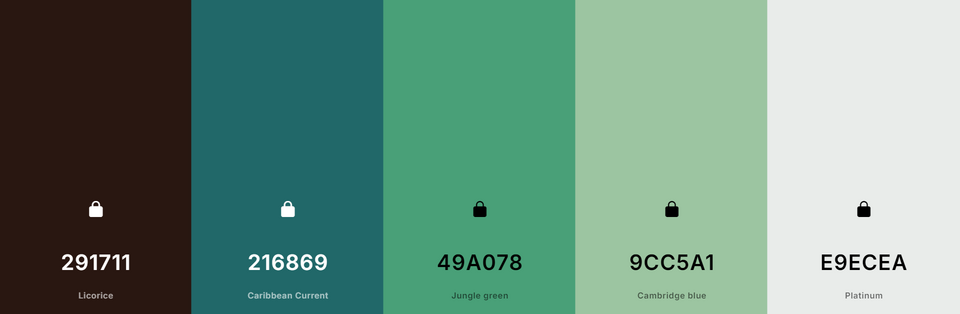
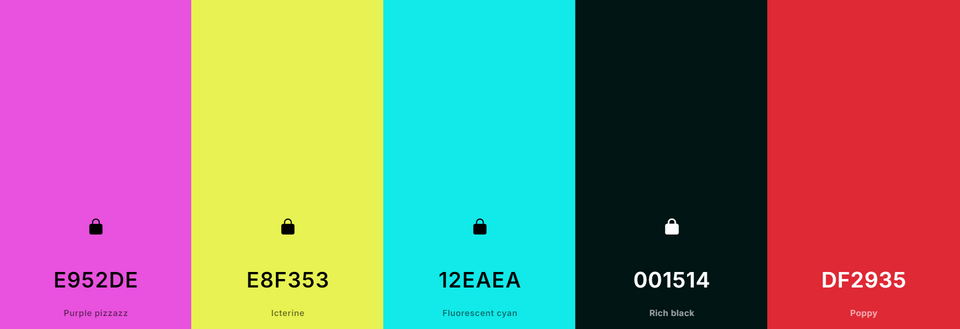
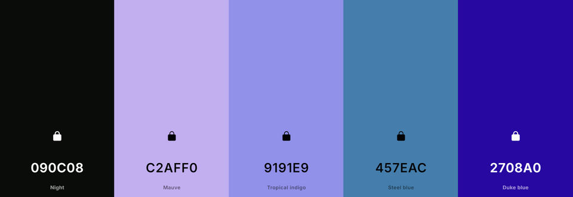
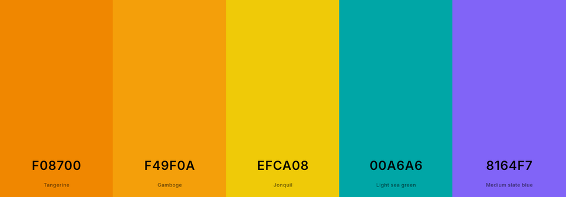
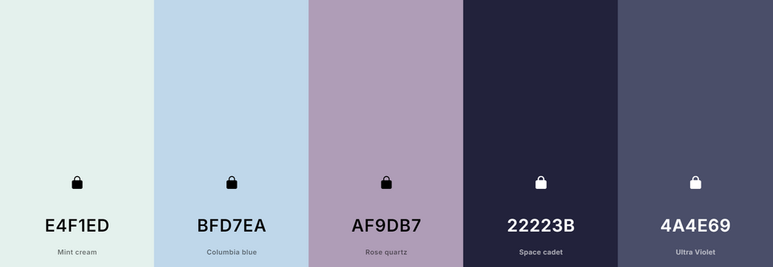
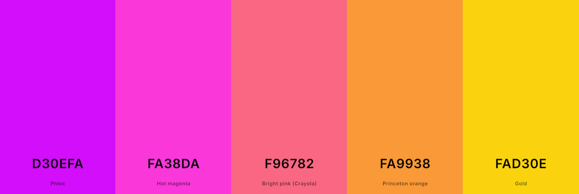
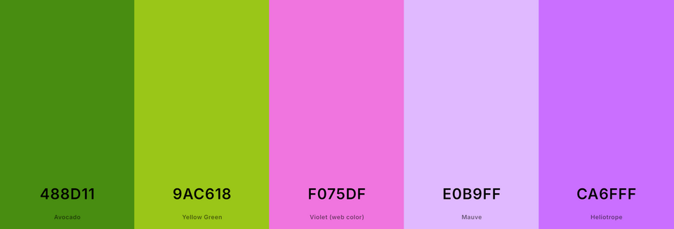
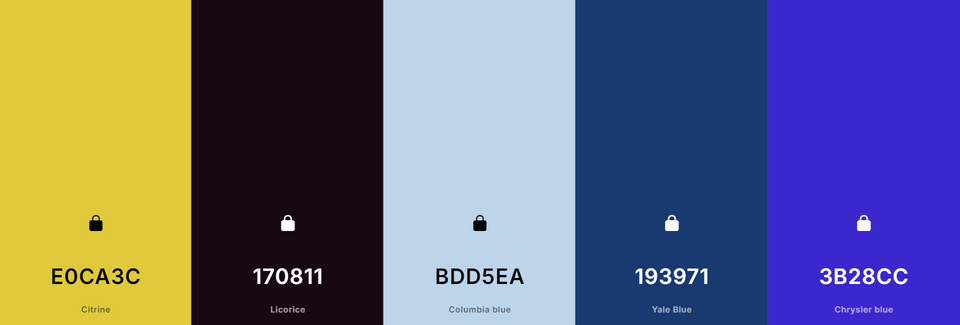

My Personal Favorite Color Schemes
Thin Mint Day
I like the cool evergreen greens, followed by the dark brown.
Neon Triangle
The first three colors are very bright. Having the rich black as the background along with neon-colored shapes on top is a killer design!
Luna
I like this one because it reminds me of the character Luna from My Little Pony, specifically her debut design when her hair was not flowy.
Mango Berry Burst
This feels like the color scheme for a very energetic character, with the 2 cool colors to keep it even.
Mundane Dream
Although the colors are pretty dull, it still has a sweet vibe to it, like a grandma reflecting on life!
Magenta Fizzle Pop
This color scheme feels like it would belong to an already energetic character that's singing a song.
Flora
It reminds me of Flora from Winx Club!
Kamari
This is a good color scheme for my original character! She has a cool color theme, but the gold gives her a nice shine.